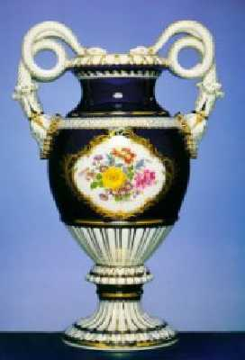
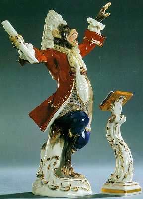
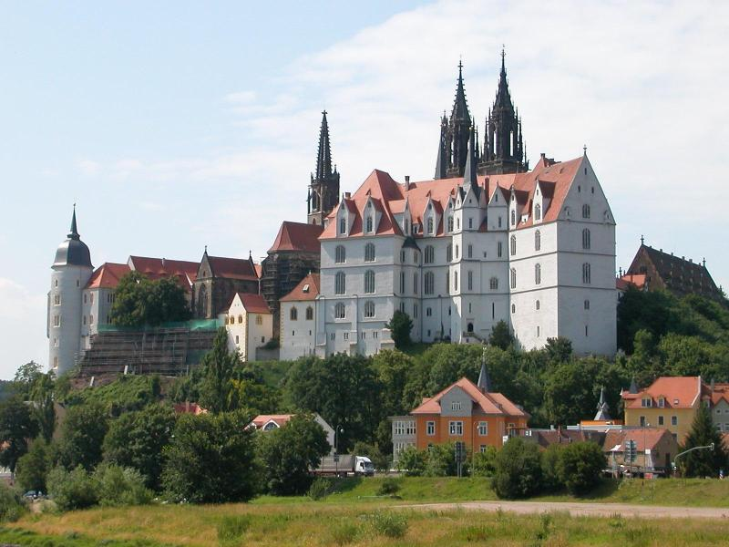
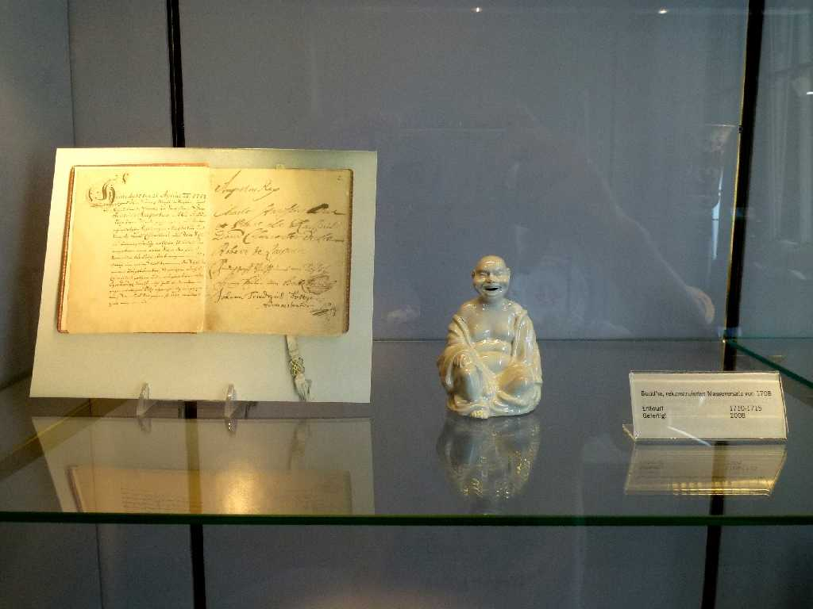
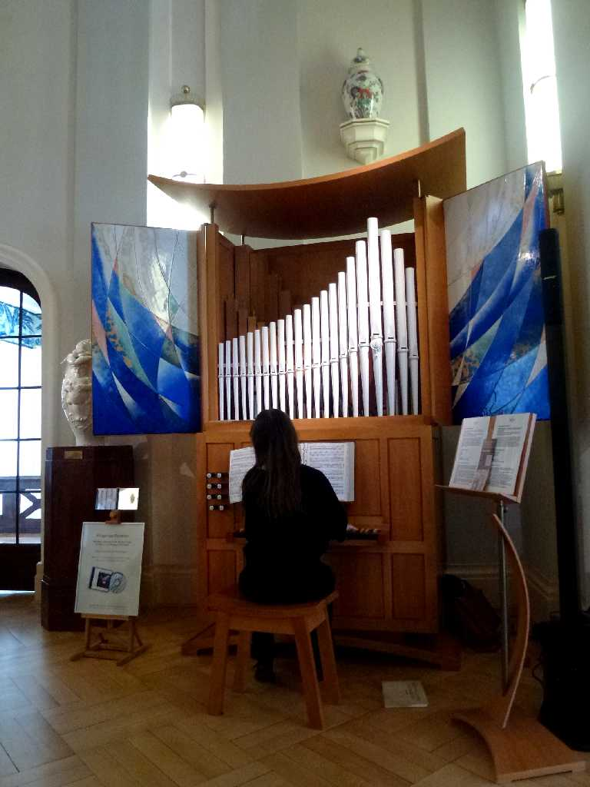
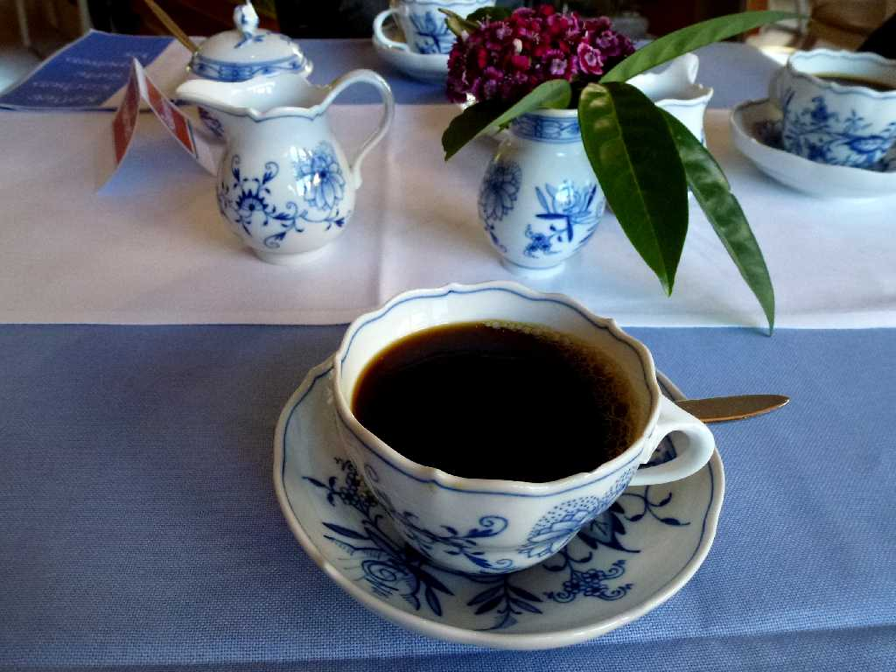

August 1989 Meissen
硬質磁器としてはヨーロッパ最古の伝統をもつ古窯で現在でもヨーロッパの磁器製造の最高峰の一つである

Albrechtsburg Castle
１５２５年にマイセンの領主ヴェッティンの住居として築城されたが現在はマイセンの博物館として内部が公開されている

Porzellanmuseum Meißen
約３０年ぶりの再訪問で東西ドイツが統合され近代的な磁器博物館になっていました

June 12 2014
Organ
Porzellanmuseum


美しい音色のマイセン磁器パイプのオルガン演奏

Teezeit Porzellanmuseum
マイセン食器でティータイム